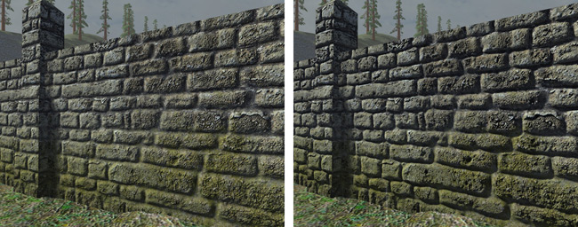
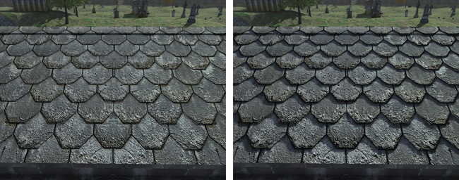

Horizon Mapping
From C4 Engine Wiki


Horizon mapping is a technique that allows the bumps encoded in a normal-mapped surface to cast shadows onto the surface. Figures 1 and 2 to the right show two examples of how horizon mapping can add a great amount of useful detail to a surface that has a bumpy structure but is rendered as a flat polygon.
Creating Horizon Maps
Before horizon mapping can be used in a material, special horizon information needs to be generated and stored in a pair of horizon texture maps. This is done when the normal map is imported by checking the "Generate horizon maps" box. In addition to the normal map, two textures with -h1 and -h2 appended to the name are generated.
The "Scale horizon maps to half resolution" box can be checked to reduce the size of the horizon maps. This is generally a good idea to save memory, and it rarely impacts visual quality because the shadows cast by bumps in the normal map don't need to be very sharp.
Horizon map generation is a computationally expensive process, so it can take a little time for the texture importer to run when horizon maps are being created.
Using Horizon Maps
Once horizon maps have been generated, they can be used by checking the "Enable horizon mapping" box in the Material Manager.
In the Shader Editor, horizon maps are used by including a Horizon Shadow process in the shader graph for the lighting pass. When a standard material is converted to a shader graph, this process is automatically placed in the right location if the material has horizon mapping enabled.